| Select Scatter Chart > Overview |
The Select Scatter chart is a special type of chart that allows users to visually select a subset of data from the given data points. Essentially, it's a extension of XY Plot Chart (Scatter Chart) from FusionCharts v3 with the added functionality of selecting any number of points on the chart and returning them back to server (or JavaScript functions for further processing). This can be used for a variety of purposes, where you want your users to visually select data from the scatter chart. A finished chart looks as under: 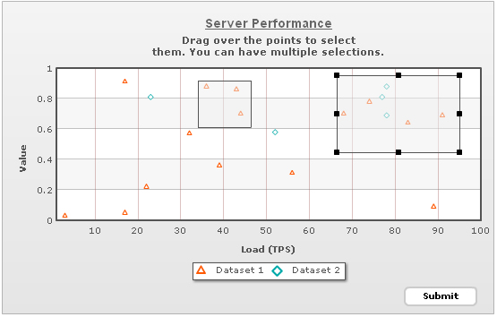 As you can see above, the chart is basically an XY Plot chart. Each data point is represented as a scatter point. You can opt to connect these points by lines too.
<chart caption='Server Performance' subcaption='Drag over the points to select
them. You can have multiple selections.' yAxisName='Value' xAxisName='Load (TPS)' showLegend='1' showLabels='1'
xAxisMaxValue='1.00' xAxisMinValue='0.01' submitDataAsXML='1' formAction='../MyDataProcessor.asp'
formTarget="_blank">
<categories verticalLineColor='AA6666' verticalLineThickness='1'>
<category label='10' x='0.1' showVerticalLine='1'/>
<category label='20' x='0.2' showVerticalLine='1'/>
<category label='30' x='0.30' showVerticalLine='1'/>
<category label='40' x='0.40' showVerticalLine='1'/>
<category label='50' x='0.50' showVerticalLine='1'/>
<category label='60' x='0.60' showVerticalLine='1'/>
<category label='70' x='0.70' showVerticalLine='1'/>
<category label='80' x='0.80' showVerticalLine='1'/>
<category label='90' x='0.90' showVerticalLine='1'/>
<category label='100' x='1.00' showVerticalLine='0'/>
</categories>
<dataSet id='DS1' seriesName='Dataset 1' Color='ff5904' plotBorderThickness='0' showPlotBorder='1'>
<set id='S1' x='0.17' y='0.05' />
<set id='S2' x='0.83' y='0.64' />
<set id='S3' x='0.89' y='0.09' />
<set id='S4' x='0.17' y='0.91' />
<set id='S5' x='0.56' y='0.31' />
<set id='S6' x='0.22' y='0.22' />
<set id='S7' x='0.91' y='0.69' />
<set id='S8' x='0.36' y='0.88' />
<set id='S9' x='0.39' y='0.36' />
<set id='S10' x='0.03' y='0.03' />
<set id='S11' x='0.68' y='0.7' />
<set id='S12' x='0.43' y='0.86' />
<set id='S13' x='0.74' y='0.78' />
<set id='S14' x='0.44' y='0.7' />
<set id='S15' x='0.32' y='0.57' />
</dataSet>
<dataSet id='DS2' seriesName='Dataset 2' Color='00aaaa' plotBorderThickness='0' showPlotBorder='1'>
<set id='S1' x='0.78' y='0.88' />
<set id='S2' x='0.77' y='0.81' />
<set id='S3' x='0.23' y='0.81' />
<set id='S4' x='0.78' y='0.69' />
<set id='S5' x='0.52' y='0.58' />
</dataSet>
<styles>
<definition>
<style name="myCaptionFont" type="font" font="Arial" size="14" color="666666" bold="1" underline="1" />
</definition>
<application>
<apply toObject="Caption" styles="myCaptionFont" />
</application>
</styles>
</chart>{
{
"chart":{
"caption":"Server Performance",
"subcaption":"Drag over the points to select them. You can have multiple selections.",
"yaxisname":"Value",
"xaxisname":"Load (TPS)",
"showlegend":"1",
"showLabels":"1",
"xaxismaxvalue":"1.00",
"xaxisminvalue":"0.01",
"submitdataasxml":"1",
"formaction":"../MyDataProcessor.asp",
"formtarget":"_blank"
},
"categories":[{
"verticallinecolor":"AA6666",
"verticallinethickness":"1",
"category":[{
"label":"10",
"x":"0.1",
"showverticalline":"1"
},
{
"label":"20",
"x":"0.2",
"showverticalline":"1"
},
{
"label":"30",
"x":"0.30",
"showverticalline":"1"
},
{
"label":"40",
"x":"0.40",
"showverticalline":"1"
},
{
"label":"50",
"x":"0.50",
"showverticalline":"1"
},
{
"label":"60",
"x":"0.60",
"showverticalline":"1"
},
{
"label":"70",
"x":"0.70",
"showverticalline":"1"
},
{
"label":"80",
"x":"0.80",
"showverticalline":"1"
},
{
"label":"90",
"x":"0.90",
"showverticalline":"1"
},
{
"label":"100",
"x":"1.00",
"showverticalline":"0"
}
]
}
],
"dataset":[{
"id":"DS1",
"seriesname":"Dataset 1",
"color":"ff5904",
"plotborderthickness":"0",
"showplotborder":"1",
"data":[{
"id":"S1",
"x":"0.17",
"y":"0.05"
},
{
"id":"S2",
"x":"0.83",
"y":"0.64"
},
{
"id":"S3",
"x":"0.89",
"y":"0.09"
},
{
"id":"S4",
"x":"0.17",
"y":"0.91"
},
{
"id":"S5",
"x":"0.56",
"y":"0.31"
},
{
"id":"S6",
"x":"0.22",
"y":"0.22"
},
{
"id":"S7",
"x":"0.91",
"y":"0.69"
},
{
"id":"S8",
"x":"0.36",
"y":"0.88"
},
{
"id":"S9",
"x":"0.39",
"y":"0.36"
},
{
"id":"S10",
"x":"0.03",
"y":"0.03"
},
{
"id":"S11",
"x":"0.68",
"y":"0.7"
},
{
"id":"S12",
"x":"0.43",
"y":"0.86"
},
{
"id":"S13",
"x":"0.74",
"y":"0.78"
},
{
"id":"S14",
"x":"0.44",
"y":"0.7"
},
{
"id":"S15",
"x":"0.32",
"y":"0.57"
}
]
},
{
"id":"DS2",
"seriesname":"Dataset 2",
"color":"00aaaa",
"plotborderthickness":"0",
"showplotborder":"1",
"data":[{
"id":"S1",
"x":"0.78",
"y":"0.88"
},
{
"id":"S2",
"x":"0.77",
"y":"0.81"
},
{
"id":"S3",
"x":"0.23",
"y":"0.81"
},
{
"id":"S4",
"x":"0.78",
"y":"0.69"
},
{
"id":"S5",
"x":"0.52",
"y":"0.58"
}
]
}
],
"styles":{
"definition":[{
"name":"myCaptionFont",
"type":"font",
"font":"Arial",
"size":"14",
"color":"666666",
"bold":"1",
"underline":"1"
}
],
"application":[{
"toobject":"Caption",
"styles":"myCaptionFont"
}
]
}
}The end user process for interacting with this chart can be listed as under: Step 1: The chart is presented to the user with all the data points, from which we can select. 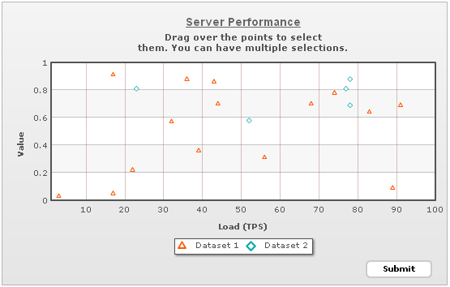 Step 2: To select a set of points, the user can drag and draw a rectangle over the chart. All the points within this rectangle are now selected points. 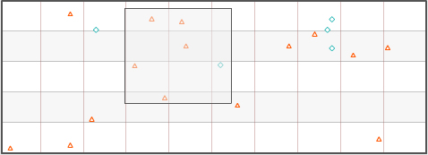 Once the select rectangle has been drawn, the user can resize it to adjust more points. The resize handlers lets the users do so. 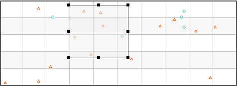 Shown below is resize handler in action. 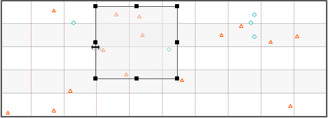 If the user wants to move the selection rectangle, he can right click on it, select "Drag Selection". 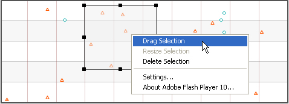 Resize rectangle in drag mode. 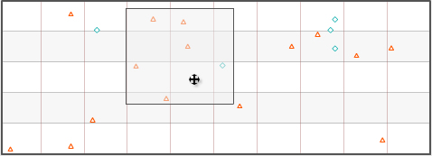 Step 3: To select more scattered data points, the user can add additional select rectangles on the chart. The process to add another select rectangle is same. Click anywhere in the chart canvas and draw a rectangle. 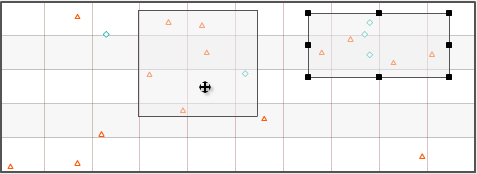 Shown below is an example where 4 select rectangles have been added to the chart. 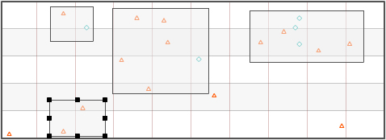 You can drag, resize or delete any select rectangles individually, by right clicking on them and then selecting the appropriate option. 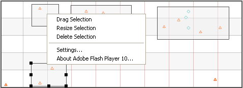 To delete any select rectangle, one can choose Delete section from context menu. 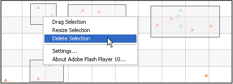 And the rectangle will be gone. 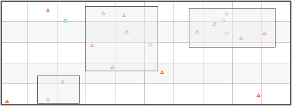 Step 4: Once the selection process is over, the user can click Submit button. This button posts the XML data as form to your server side script. Shown below is an example, where we've just displayed the XML data for selected points. In your apps, you could process this data and put into more meaningful use. 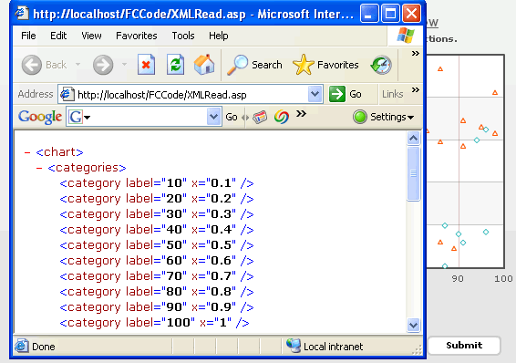 |